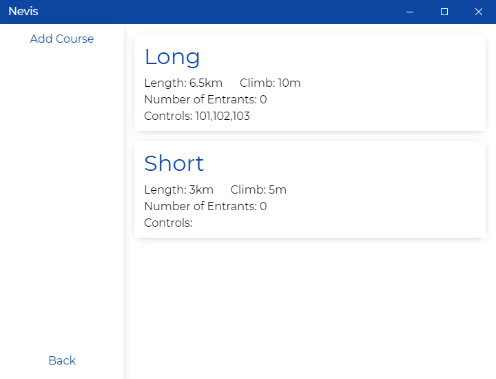
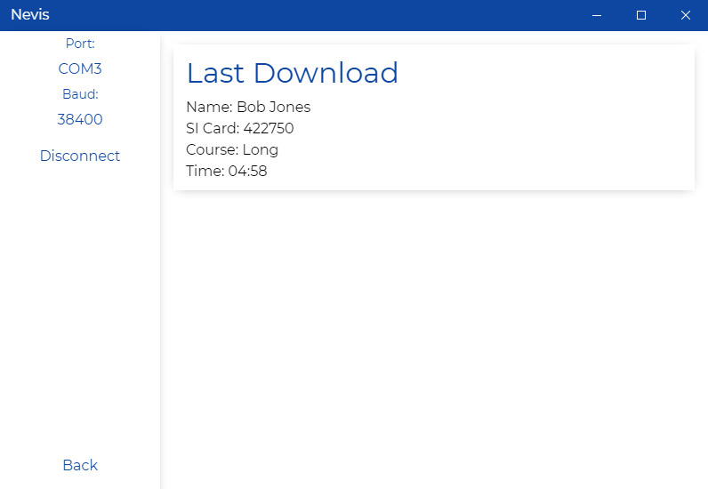
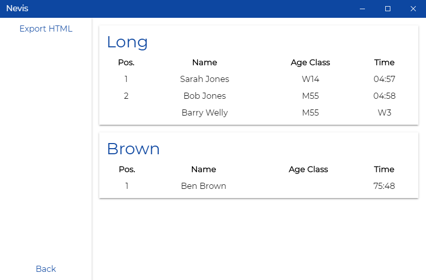
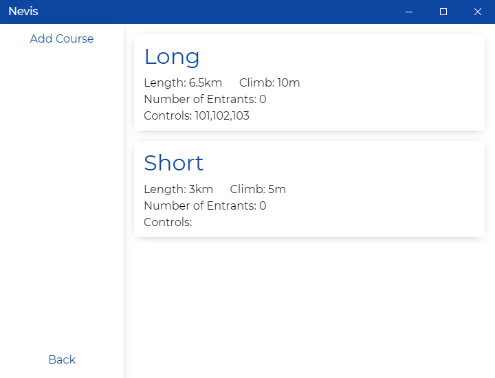
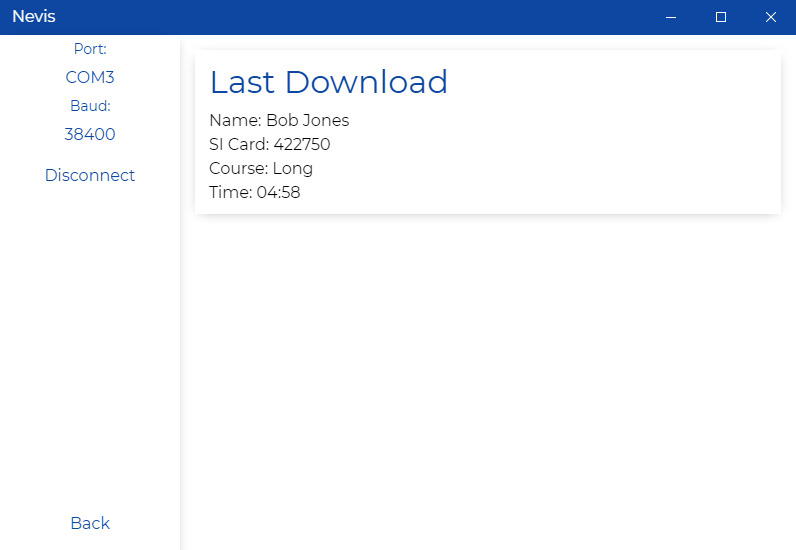
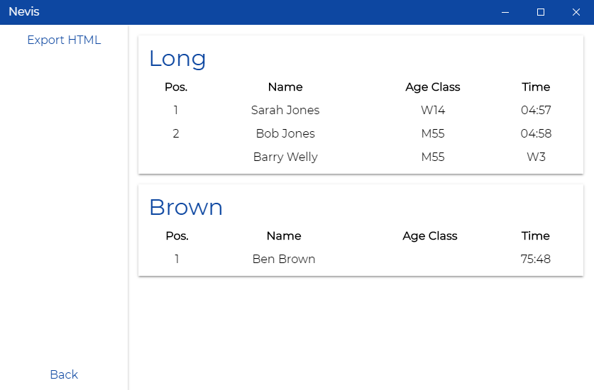

About
Nevis is a lightweight Event Management Software for Orienteering which aims to make the timing as easy as possible and has all features needed for a small to medium sized event. It is designed to be as simple and easy to use as possible as to reduce the barrier for use, allowing as many people as possible to run the timing system at events.
Version 4 of Nevis moves from a single file database to a hosted PouchDB database allowing multiple computers to run Nevis for the same event. Version 3 of Nevis is avaliable here
Nevis is created using Electron and uses Vue to create the live display of data, such as the interactive Entries view which has live Searching and Sorting. Nevis reads the SI Cards over the Serial port and then extracts the relevant details before matching the course against it and creating results or finding the best course if they are not entered.
Features
With Nevis you can:
- Add + Edit Entries
- Import Entries from IOF XML 3.0
- View of Entries Live with Searching and Sorting
- Download SI Cards
- Tested with SI Card 5, 8, 10, 11 + SIAC
- SI Card P + 9 (Untested)
- SI Card 6 - Support to Come Later
- Use Automatic Course Checking and matching if course is unknown
- Add + Edit Courses
- Import Courses from IOF XML 3.0
- View Results
Screenshots
 





License
Released under an MIT License - Copyright (c) 2018 Ben Brown
Permission is hereby granted, free of charge, to any person obtaining a copy of this software and associated documentation files (the" Software"), to deal in the Software without restriction, including without limitation the rights to use, copy, modify, merge, publish, distribute, sublicense, and/or sell copies of the Software, and to permit persons to whom the Software is furnished to do so, subject to the following conditions: The above copyright notice and this permission notice shall be included in all copies or substantial portions of the Software.
THE SOFTWARE IS PROVIDED"AS IS", WITHOUT WARRANTY OF ANY KIND, EXPRESS OR IMPLIED, INCLUDING BUT NOT LIMITED TO THE WARRANTIES OF MERCHANTABILITY, FITNESS FOR A PARTICULAR PURPOSE AND NONINFRINGEMENT. IN NO EVENT SHALL THE AUTHORS OR COPYRIGHT HOLDERS BE LIABLE FOR ANY CLAIM, DAMAGES OR OTHER LIABILITY, WHETHER IN AN ACTION OF CONTRACT, TORT OR OTHERWISE, ARISING FROM, OUT OF OR IN CONNECTION WITH THE SOFTWARE OR THE USE OR OTHER DEALINGS IN THE SOFTWARE.